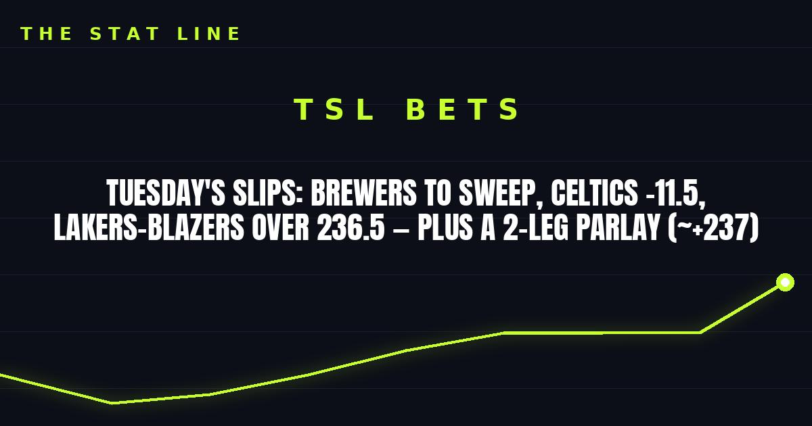

Tuesday's Slips: Brewers to Sweep, Celtics -11.5, Lakers-Blazers Over 236.5 — Plus a 2-Leg Parlay (~+237)
Three clean plays for Tuesday night: Milwaukee to finish the sweep in Game 4, Boston laying the points against a winless Nets team, and the points in the unbeaten-vs-unbeaten late game in L.A. Two games skipped on purpose.

Game slip: Milwaukee Brewers at Tampa Bay Rays — World Series Game 4
• Matchup: Milwaukee Brewers (103-59, 9-1 this postseason) at Tampa Bay Rays (98-64, 7-4)
• Time/channel: Tuesday, 8:00 p.m. ET, FOX, from Tropicana Field in St. Petersburg
• Odds (DraftKings, via SI): Brewers -131, Rays +109; run line Brewers -1.5 (+140); total 7 (Over -109 / Under -110)
• Pitching: Rays: Griffin Jax (6.00 ERA this postseason); Brewers: TBD — a bullpen game, with Woodruff unavailable after closing Game 3
• Injury report: Brewers — Grant Anderson (biceps), Brian Fitzpatrick (elbow), Quinn Priester (wrist), Angel Zerpa (forearm), all on IL. Rays — Gavin Lux (shoulder), Jon Heasley (elbow), Shane McClanahan (forearm), Edwin Uceta (shoulder), Jacob Melton (hamstring), Ryan Pepiot (hip), all on IL. No fresh flags on either side.
• Storylines: (1) Milwaukee can sweep and win its first World Series title tonight. (2) Tampa Bay has scored seven runs in three games. (3) Jax carries a 6.00 postseason ERA into his second start of these playoffs.
The bet: Brewers moneyline (-131). The Rays' bats have gone quiet, Milwaukee's bullpen is fully rested, and the price is still short for a team up 3-0. The honest caveat: a bullpen game has more moving parts than a named starter, so this is a moneyline play, not a run-line one.
Game slip: Brooklyn Nets at Boston Celtics
• Matchup: Brooklyn Nets (0-3) at Boston Celtics (2-1)
• Time/channel: Tuesday, 7:30 p.m. ET, NBCS-BOS / YES, from TD Garden in Boston
• Odds (FanDuel): Celtics -11.5 (-110); total 220.5; moneyline Celtics -592, Nets +430
• Injury report: Nets — none listed. Celtics — Devin Carter out indefinitely (mononucleosis); no other rotation concerns. Boston is on the second night of a back-to-back after beating Chicago 134-99 on Monday.
• Storylines: (1) Brooklyn has allowed 123.7 points per game, including 136 to Indiana on Sunday. (2) Boston just hung 134 on Chicago. (3) The Nets have lost three straight and are still searching for their first win.
The bet: Celtics -11.5 (-110). Boston's depth and defense against the league's leakiest early defense is the cleanest mismatch on the board. The caveat is real: it's a big number on a back-to-back, so this is a lean on talent, not a lock.
Game slip: Portland Trail Blazers at Los Angeles Lakers
• Matchup: Portland Trail Blazers (2-0) at Los Angeles Lakers (3-0)
• Time/channel: Tuesday, 11:00 p.m. ET, NBC/Peacock, from Crypto.com Arena in Los Angeles
• Odds (FanDuel): Lakers -3.5; total 236.5; moneyline Lakers -136, Trail Blazers +116
• Injury report: Lakers — Cameron Carr (oblique) and Adou Thiero (knee) out; neither has played this season. Trail Blazers — Shaedon Sharpe (meniscus) out since August; Scoot Henderson (ankle soreness) and Branden Carlson (concussion protocol) questionable.
• Storylines: (1) Both teams are unbeaten — the night's only unbeaten-vs-unbeaten matchup. (2) The Lakers lead the league at 128.0 points per game; Portland is second at 126 a night. (3) Luka Doncic is averaging 34.3 points after his 52-point night against Utah.
The bet: Over 236.5 (-110). Two of the league's top three scoring teams, both unbeaten, both playing fast. No unders here — this is a scoring game by every early number. Caveat: Henderson's questionable tag is worth watching; if he sits, Portland's creation takes a hit, but the Lakers' side of the total alone has cleared this kind of number all week.
The parlay (2 legs, ~+237)
• Brewers moneyline (-131) + Lakers-Blazers Over 236.5 (-110) — about +237. Two plays, both on form, no lottery tickets.
Skipped on purpose
• Pistons at Knicks: Detroit is 3-0, but starting center Jalen Duren is out with a hamstring strain and Ausar Thompson (ankle) and Isaiah Joe (hip) are both questionable. Too many moving parts.
• Kings at Spurs: San Antonio is an 18.5-point favorite, and Sacramento is without Keegan Murray (out 10–14 days). A number that big plus a fresh injury flag is an easy pass.
No guaranteed wins, no ten-leg tickets — just three plays with real reasoning behind them. If gambling stops being fun, call 1-800-GAMBLER.
Sources: Brewers vs. Rays Prediction, Odds, Probable Pitchers, Prop Bets for World Series Game 4 (SI/DraftKings); Brewers look to sweep Rays in World Series Game 4 (theScore/AP); Celtics vs. Nets Prediction, Odds, Picks, Best Bets for Oct. 27 (FanDuel); Lakers vs. Trail Blazers Prediction, Odds, Picks, Best Bets for Oct. 27 (FanDuel); NBA injury report today (27th October) (Sportskeeda); Tuesday NBA injury report (WhyNBA).